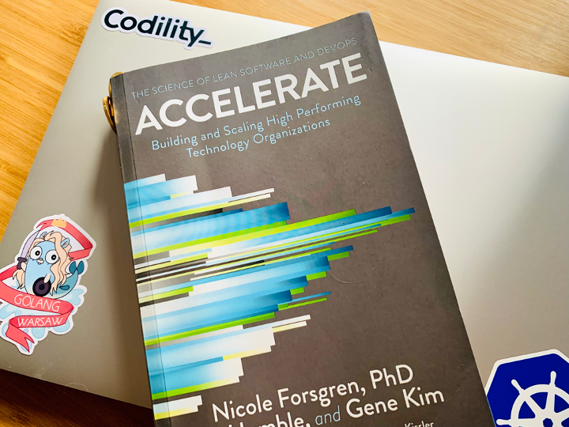

Usługi i platformy deweloperskie dla aplikacji w Chmurze
Wojciech Barczyński
wojciech.barczynski@wsb.wroclaw.pl
Dlaczego chmura?
- Elastyczność
- Niższe koszty
- Wszystko API, łatwe do automatyzacji
- Pay As You Go
- Gwałtowna demokratyzacja technologii
Dlaczego chmura?
- Potężne narzędzie do rozwiązywania problemów
- Cloud-first, Mobile-first
Ewolucja 1
- Własny hardware
Ewolucja 1
Trendy:
- Rozwój CPU -> CPU idle
- Dużo sprzętu -> szybko się starzeje
Ewolucja 2
- Wirtualizacja na niezawodnym i dedykowanym sprzęcie
- Konsolidacja
Ewolucja 2
- Dużo sprzętu -> szybko się starzeje
- Mała elastyczność
- Trudne do zautomatyzowania
- Amazon i Black Friday
- Google buduje na zwykłym sprzęcie
Ewolucja 3
- Masowa wirtualizacja na zwykłym*/zawodnym sprzęcie
Jak wybrać?
- 100 serwisów
- K8S? Serverless? EC2 + xyz
Jak wybrać?

High performance teams
(Tech) metrics:
- Lead Time
- Deployment frequency
- Mean time to Recovery
- Change Fail Percent

Choosing tech
Other factors:
- Skillset
- New tech for people to feel that they learn sth new
- What year team tech background is